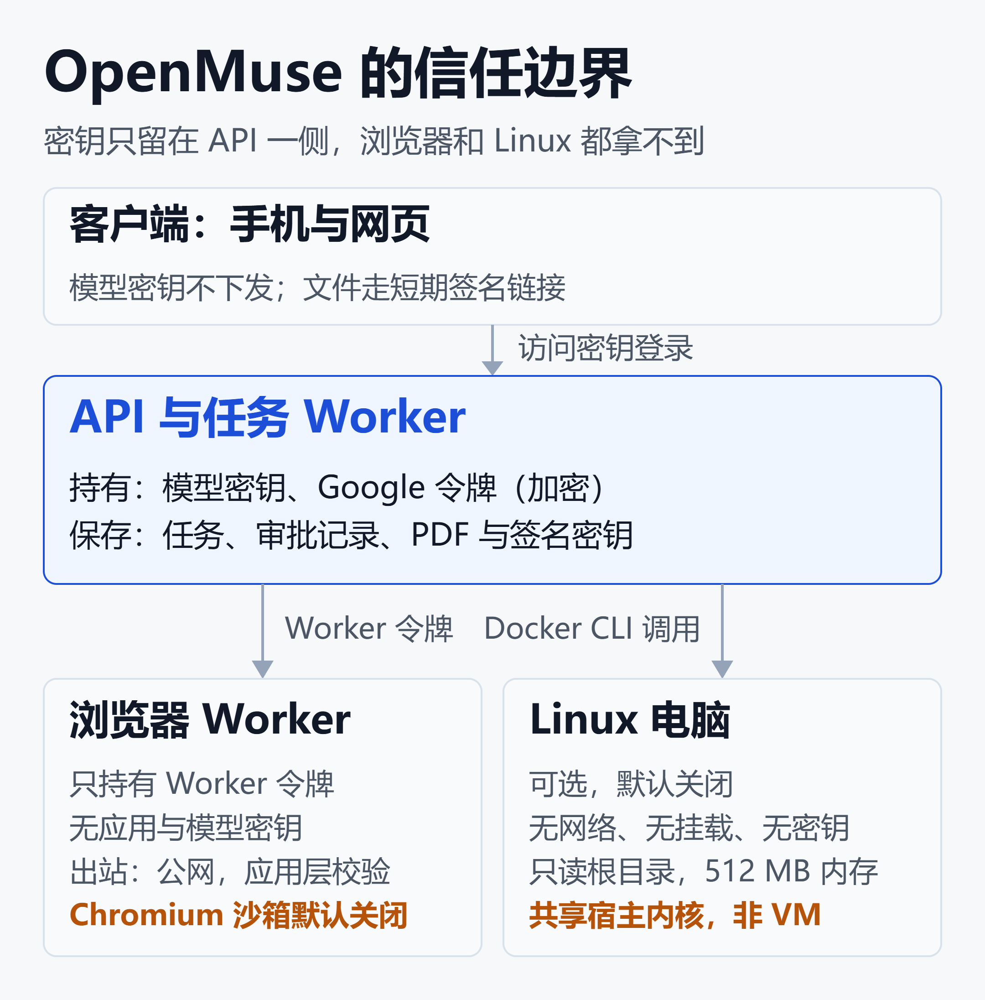
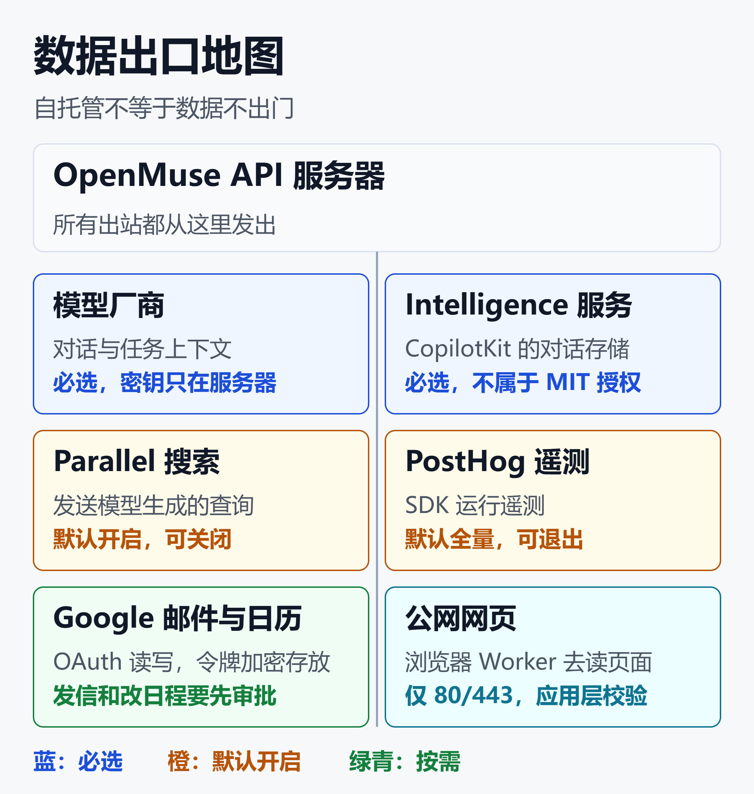

OpenMuse 能替代 Muse 吗？Alpha 阶段的能力边界与安全账
2026 年 9 月 8 日，Meta 发布个人 Agent Muse。
15 天后的 9 月 23 日，AlphaSignal 报道了 CopilotKit 开源的 OpenMuse，标题里直接写着「自带浏览器的自托管个人 Agent」。截至 10 月 12 日，这个仓库约 4.5k Star、613 Fork、30 位贡献者。
热度很高，但仓库自己的安全文档开头就泼了一盆冷水：当前每个部署只支持一个所有者，用共享访问密钥登录，不是多租户账号体系。
所以「能不能替代 Muse」这个问题，答案是分层的：能替代一部分功能，替代不了 Muse 的整套安全设计。差距集中在四件事上：能力、隔离强度、数据出口、审批边界。
一、先分清：搜 OpenMuse 会搜到谁
在 GitHub 上搜 OpenMuse，会跳出好几个同名项目，容易看混：
- CopilotKit/openmuse：今天的主角。MIT 协议，TypeScript 占 99.4%，一套 Expo / React Native 代码覆盖 iOS、Android 和网页
- nanoMuse：原 OpenMuseAgent/OpenMuse，仓库已归档并迁移。10 月 6 日有 arXiv 论文，协议是 GPL-3.0，思路是「一个 Agent 管你所有设备」，每个动作都过 Sentinel
- Hugging Face 的 open-muse：文生图模型 MUSE 的复现，和个人 Agent 无关
- Muse S 头环工具：脑电设备的数据记录工具，同样无关
PyPI 上还有一个同名的 openmuse 包，页面也自称 Muse 形态的自托管个人 Agent，和上面哪个仓库同源尚不明确，安装前留意区分。
另外，Meta 8 月开源的 Muse Glimmer 是一个 30B 模型，不是 Muse 这个产品。两者的关系见扎克伯格公开为"蒸馏"辩护：Meta 开源 30B Agent 模型背后的三场战争。
二、OpenMuse 是什么：一台由你来养的「Agent 电脑」
官方一句话概括是：带浏览器、终端、文件，并且「活会一直干下去」的个人 Agent。
它不是一个 App，而是三个进程加一个客户端：
- API 服务器：Hono 框架加 CopilotKit 运行时，同时跑任务 Worker，数据存在 PGlite 或 PostgreSQL
- 浏览器 Worker：Playwright 驱动的持久化 Chromium，每个会话有独立的浏览器资料
- Linux 电脑（可选）：Docker 容器，带持久的
/workspace卷 - 客户端：Expo / React Native，iOS、Android、网页共用
用户视角下，它能做的事集中在这几类：
- 派发后台任务，任务有计划、进度、暂停、重试和回执
- 打开浏览器读网页，需要登录或验证码时点「Take control」人工接管同一个会话
- 读 Gmail 和日历，发信、改日程前先出审批卡片
- 填 PDF 表单、导入 CSV 做消费汇总、追踪网页变化和价格阈值

这张图的重点是谁手里有钥匙。模型密钥和 Google 令牌只在 API 服务器上；浏览器 Worker 只有自己的 Worker 令牌，Linux 容器什么密钥都没有。这条设计是 OpenMuse 里最像「正经安全设计」的地方。
图里标橙色的两项是它的短板：Chromium 沙箱默认关闭，Linux 容器共享宿主内核。后面第五节会展开。
三、对照 Meta Muse：能力表
先看功能面。Meta 的数据来自官方发布稿，OpenMuse 来自仓库 README 和路线图。
| 能力 | Meta Muse | OpenMuse |
|---|---|---|
| 源码 | 闭源 | MIT 开源 |
| 运行位置 | Meta 云端 | 你自己的服务器 |
| 计算机 | Secure VM | Chromium + Docker |
| 后台任务 | 关 App 继续 | 主机在线才继续 |
| 外发把关 | Sentinel 把关出站 | 邮件日历写入要审批 |
| 连接器 | 邮件、Instagram 等 | 仅 Gmail、日历 |
| 购买预订 | 支持 | 路线图 |
| 图像生成 | 有 | 路线图 |
| 用户范围 | 面向大众，首发美国 | 单所有者 |
结论很直接：OpenMuse 复现了 Muse 的「形」，没有复现它的「全」。
购买、预订、社交连接器、语音、图像都在路线图里，官方还特意写明：每一项要有自己的认证、能力边界、失败行为和端到端证据，才算正式支持，并且不承诺日期。
另一个细节：README 副标题写着「兼容任意 agent harness」，但它的 OpenBot 适配器目前是关闭状态，只做了契约测试，真实的用户和会话桥接还是后续工作。
四、它做对了什么：工程层面的实证
Alpha 不等于粗糙。有几处设计看得出认真：
审批不是弹窗，是绑定
邮件发送和日历修改前，系统会生成一份审批，绑定账户、被审内容和服务商版本。账户变更、断开连接、审批过期，都会让待执行的操作失效。
如果网络返回的结果不确定，系统会记录下来等人核对，不会自动重放，避免重复发信。这比很多「点一下同意」的实现严谨。
任务能扛重启
任务状态存数据库，用 SQL 租约恢复中断的工作。官方验收记录里，真实 PGlite 重启、双 Worker 抢租约、过期租约恢复、暂停恢复都有测试覆盖。
截至 9 月 16 日的验收记录，154 项测试通过。之后仓库仍在迭代，这个数字只是当时的快照。
浏览器的出站检查做得细
浏览器 Worker 只允许访问 80 和 443 端口的公网地址。DNS 解析结果也要查，任何内网或保留地址的答案都会被拒绝。
更细的一步是：内部有个回环代理，校验目的地后直接连到那个已校验的 IP，防止第二次解析把连接重新绑定到内网地址（DNS 重绑定）。QUIC 和不走代理的 WebRTC UDP 也被关掉了。
Linux 容器的参数很保守
容器用非 root 用户（UID 1000）运行，根文件系统只读，去掉全部 Linux capabilities，Docker 网络设为 none。没有宿主目录挂载，没有 Docker socket，没有任何密钥。
资源上限是 512 MB 内存（无交换）、1 个 CPU、128 个进程、64 MB 临时空间。单条命令 30 秒超时，输出上限 128 KB。
按隔离强度分档，这属于「容器」这一档。几种隔离方案的强弱对比，可以看代码沙箱：给 AI Agent 一台"炸不坏"的云电脑——原理、方案与价值全解。
五、安全账之一：墙有多厚
官方安全文档 SECURITY.md 对隔离强度说得很坦白，核心是三句话：
- Docker 共享宿主内核，不是完整的虚拟机，也不是敌对租户的保证
- Playwright 默认关闭 Chromium 内置沙箱，浏览器 Worker 同样不是敌对租户的安全边界
- 浏览器的 Docker 镜像减少了宿主访问，但没有内核级的网络隔离
共享内核意味着什么，有一个现成的例子。之前的文章Kata 挡得住内核漏洞，挡不住数据外泄：OpenShell 补上 Agent 沙箱缺的策略层介绍过 Red Hat 的实测：普通 runc 容器路线的 Pod，被 CVE-2026-31431 的 732 字节利用脚本跨容器逃逸，而 Kata 微虚拟机挡住了。
不过 OpenMuse 的容器还去掉了 capabilities、根目录只读、没有网络，配置和那组实验不一样，不能直接套用结论。目前也还没有针对 OpenMuse 的公开漏洞测试。
但前提是共同的：共享内核的容器，隔离强度的天花板就是内核本身。对一个单人自用、只跑自己命令的场景，这通常够用；对要执行不可信代码或多人共用的场景，这堵墙不够厚。
官方也提供了更强的选项：把「电脑」换成 E2B Desktop 虚拟机。但这引出下一笔账。
六、安全账之二：数据出口
自托管给人一种错觉：数据都在自己机器上。但 OpenMuse 的运行依赖几个外部服务，数据会从这些出口流出。

按图中的颜色分三类：
- 必选：模型厂商（默认
openai/gpt-5，也可换 Anthropic、Google）；CopilotKit Intelligence，用来存对话线程，README 要求每个部署都配置项目 Key，而且这个服务不在仓库的 MIT 授权范围内 - 默认开启：Parallel 搜索，会把模型生成的查询和可能含对话内容的上下文发给第三方，免费额度有限流；PostHog 遥测，默认全量上报，显式的 SDK 退出设置优先
- 按需触发：Google 邮件与日历，读写要 OAuth，写入要审批；公网网页，由浏览器 Worker 访问
所以「自托管」更准确的说法是：计算和存储在你手里，但对话存储依赖 CopilotKit 的服务，搜索和遥测默认外发。
对比一下 Meta 的承诺：Muse 的数据不与 Meta 广告系统共享，用户可以选择不让互动用于训练，之后还计划推出连 Meta 也读不到数据的 Confidential VM。
这些是厂商的单方面承诺，外界无从验证，但至少责任方是明确的。OpenMuse 的边界，则需要你自己逐项去关、去查。
七、安全账之三：审批管到哪里
Muse 的设计里有个独立的 Sentinel Agent，和主 Agent 在系统层隔离，Meta 称「Muse 做的任何事，没有 Sentinel 批准就到不了互联网」。
OpenMuse 的审批在应用工具层：只覆盖它自己的邮件和日历工具。这是两种完全不同的位置。
Agent 安全可以拆成两半：「墙」管代码逃不逃得出去，「规矩」管代码能把什么送出去。用这个框架看：
- 规矩做得好的地方：邮件和日历写入有绑定式审批；Linux 容器网络为 none，命令层面送不出东西
- 规矩缺位的地方：浏览器能访问任意公网页面，这一步没有审批
后一条官方没有明说，是根据公开描述推出来的：浏览器 Worker 只做「目的地是否公网」的检查。如果 Agent 被网页里的提示注入诱导，理论上可以把数据编码进一个公网 URL 的查询参数里。官方对此的态度是在 README 末尾写明：网站、邮件和文档内容只提供证据，不构成行动许可。这是对模型的约束，不是技术上的强制拦截。
E2B 桌面模式把这个问题放大了，官方文档里写得很明白：
- 出站互联网访问开放，OpenMuse 不审查这条出口
- 审批只覆盖应用自己的邮件和日历工具，被提示注入的 Agent 可能从电脑里外传数据，或在浏览器里提交表单
- 桌面直播地址只靠 VNC 密码保护，有效字符只有 8 位，必须当成持有者令牌对待
- VM 里监听的端口可以被公网直接访问，例如在
/workspace里起一个http.server，就等于把文件放到了互联网上
也就是说，OpenMuse 的「墙」可以换成更强的 VM，但换了以后，「规矩」反而更少。
另外，认证本身也比较轻：单所有者、共享访问密钥、签名链接在过期前就是凭证。.env、.openmuse 目录、数据库备份和浏览器资料（里面有登录态）都要按私密数据保护。
八、自托管的门槛与成本
想认真跑起来，要准备这些：
- 运行环境：Node 24 LTS、pnpm 11.19.0，以及一个 CopilotKit Intelligence 项目 Key
- 模型费用：默认调用
openai/gpt-5，自己承担 API 费用 - 主机常开：后台任务依赖服务器在线；API 只能跑一个实例，PGlite 不能被多个进程同时打开，拆 Worker 要换 PostgreSQL
- Render 部署：一份蓝图包含 API、网页和私有浏览器三个服务。API 和浏览器各要 Standard 规格加 1 GB 磁盘；官方特别提醒，512 MB 规格会在绑定端口前内存溢出，因为 PGlite 要加载嵌入式 Postgres
没有磁盘的重新部署会清空数据库、PDF 和签名密钥。Render 的月费按规格计价，部署前可以在 Render 官网按上面的配置估算。
还有一点容易忽略：本地试玩版的限制比想象中少。官方说本地示例不需要模型、Google 账号或 Docker，但仍然需要 Intelligence 项目 Key，没有它聊天打不开线程。
九、该不该用：三档建议
按风险从低到高，可以分三档来用。
第一档：试玩，放心做
本地起一个示例工作区，只用虚构数据，监听回环地址。官方示例里的「填写许可单」「追踪测试页变化」「示例交易导入」都不会碰真实账号。目的是理解它的工作方式，评估要不要往下走。
第二档：小范围自用，要收口
适合技术用户在自己的 VPS 或 Render 上跑。建议这样收口：
- 用专用的 Gmail 小号，只授予读权限，确实需要写时再单独开
- 浏览器 Worker 保持私有网络，不暴露公网，用 HTTPS 和访问限制保护 API
- 用不到的外发通道先关掉
- 不开 E2B 模式，除非你清楚它放开了什么
最小化的环境变量示意，变量名取自官方 README：
# 收口示例，具体取值按你的部署调整
WEB_SEARCH_ENABLED=false
COMPUTER_ENABLED=false
# 远程部署需要 live 模式和访问密钥
WORKSPACE_MODE=live
OPENMUSE_ACCESS_KEY=<至少24位随机串>
遥测的退出方式，README 只说明显式 SDK 设置优先，具体开关见仓库里的 TELEMETRY 文档。
第三档：不建议
- 把主力邮箱和日历接进来并开放写权限：官方路线图里，真实 Google 账号的验收还没做完
- 多人或家庭共用：当前只有单所有者认证
- 用它执行不可信代码，或者把敏感文件放在 E2B 沙箱里
- 指望它做购买、预订：这些能力还没有
十、上手前再记住几点
- Alpha 变化很快：文中的细节都是 10 月 12 日前后的情况，仓库几乎每天更新，Star 数也一样，使用时以仓库最新文档为准
- 性能还没有公开数据：目前能看到的是官方文档、验收记录和新闻报道，还没有第三方的性能和稳定性测评
- 也没有独立安全审计：除了 ScriptByAI 的功能介绍和 AlphaSignal 的新闻，暂时没有深度测评或第三方审计可以参考
- 演示视频不等于真实效果：官方示例里的模型回复是脚本化的，只有页面内容来自真实浏览器；真实 Google 账号、跨设备同步和开放式任务的验收还在待办清单上
- Muse 的安全承诺同样要打问号：Meta 的说法目前只有官方稿。看懂个人 Agent 入口之争：云端分身、系统接管、生态闭环三条路线怎么选里提到过 Forbes 的报道，Muse 上线时就有内部员工指出安全缺陷。厂商承诺，不等于已被证明
小结
OpenMuse 是一个认真做工程的 Alpha，不是 Muse 的替代品：
- 功能面：复现了持久浏览器、后台任务、审批流和文件处理，缺购买预订、社交连接器、图像和语音
- 墙：Docker 加 Chromium，官方明说不是 VM，不防敌对租户
- 数据出口：必选的模型和 Intelligence，加默认开启的搜索与遥测，自托管不等于数据不出门
- 规矩：邮件日历审批做得严谨，但浏览器出站和 E2B 模式没有同级别的把关
- 用法：试玩可以随便，自用要收口，主力账号和多人场景先别碰
个人 Agent 的竞争，表面比的是能做多少事，底下比的是出了事谁兜底。Meta 把这件事放在系统层，OpenMuse 把它交给了你。
免责声明
本文内容基于公开资料整理，仅供技术学习与行业参考，不构成安全合规意见或产品采购建议。OpenMuse 为 Alpha 项目，文中数据（Star 数、测试数量、配置项）均为 2026 年 10 月 12 日前后的快照，请以官方仓库最新内容为准。"三档建议"和浏览器出站风险的分析属于作者基于公开资料的推断，生产或涉及真实账号的部署前请自行完整测试。
参考来源
- GitHub —— CopilotKit/openmuse
- GitHub —— CopilotKit/openmuse SECURITY.md
- GitHub —— CopilotKit/openmuse ROADMAP.md
- GitHub —— CopilotKit/openmuse docs/VERIFICATION.md
- GitHub —— CopilotKit/openmuse docs/COMPUTER.md
- GitHub —— CopilotKit/openmuse apps/worker/README.md
- CopilotKit —— OpenMuse 项目页
- AlphaSignal —— CopilotKit Open-Sources OpenMuse, a Self-Hosted Personal Agent With Its Own Browser
- ScriptByAI —— OpenMuse: Open-Source Meta Muse Alternative for Personal AI Agents
- Meta Newsroom —— Introducing Muse: The World's First Personal AI Agent Built for Everyone
- arXiv —— nanoMuse: An Open-Source Personal Agent for Every Device You Own
- GitHub —— OpenMuseAgent/OpenMuse（已迁移归档）
- GitHub —— huggingface/open-muse
- PyPI —— openmuse
延伸阅读
- 看懂个人 Agent 入口之争：云端分身、系统接管、生态闭环三条路线怎么选
- Kata 挡得住内核漏洞，挡不住数据外泄：OpenShell 补上 Agent 沙箱缺的策略层
- 代码沙箱：给 AI Agent 一台"炸不坏"的云电脑——原理、方案与价值全解
- 浏览器内 GUI Agent 全景：Page Agent、browser-use、Stagehand、Skyvern 技术路线拆解
- AI Agent治理与可观测性：企业落地的隐藏成本
- 智能体支付的中美两条路：30 家商家 vs 3 亿笔交易
推荐搭配装备
善其事，利其器。以下硬件能最大化你的AI体验👇
🔗 通过以上链接购买可支持本站持续运营 🙏